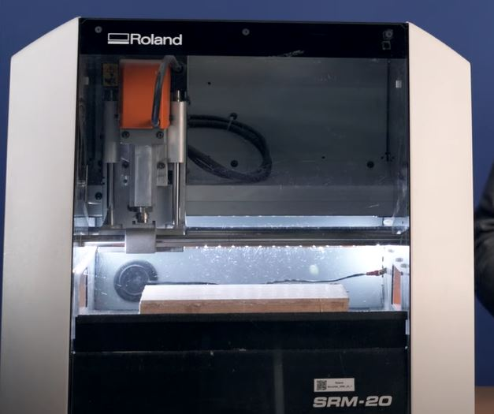
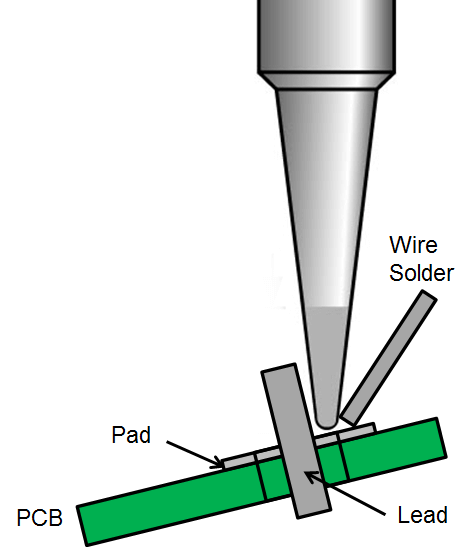

Week 4:Electronics Production
Outcomes
This week we focused on PCB ( printed circuit board) manufacturing, PCBs are good for preventing short circuits and are a good way for milling non toxic materials. The PCB is a milled sheet of copper that has pads and signal trace structures from a digital circuit board, also known as a a lay out file. In the Fab Lab Barcelona facilities, we have access to the The Roland monoFab SRM-20.

Most common materials used for milling are phenolic resin, epoxy resin, and polyester resin. We learnt how to solder a line for LED lights on a pre-cut PCB board. It was fascinating to read about the amount of effort that goes into creating a little chip that is found in practically every electrical gadget we own. Of course, in today's world, this isn't the case.
Soldering a PCB Board.
Soldering is a process in which two or more items are joined together by melting and putting a filler metal into the joint, the filler metal having a lower melting point than the adjoining metal.

How to solder:
- Clean the soldering surface
- Turn on the soldering iron and set the melting point of the solder
- Hold the tip of the leand and contact point
- Touch the solder wire to the contact pint until it flows around the lead
- Make sure there is coverage of the contact area, forming a slight pyramid shape